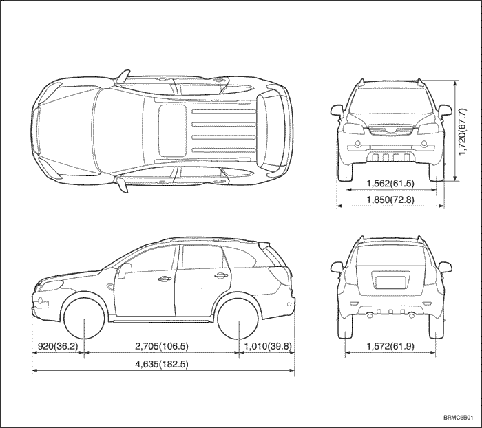
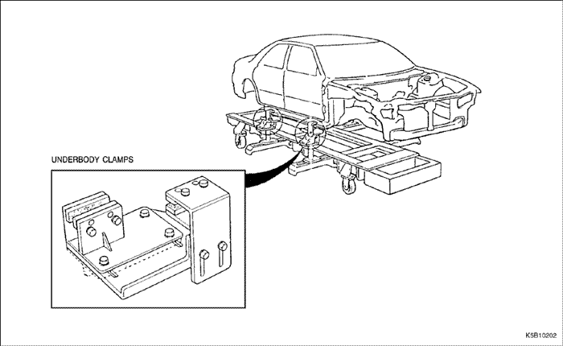
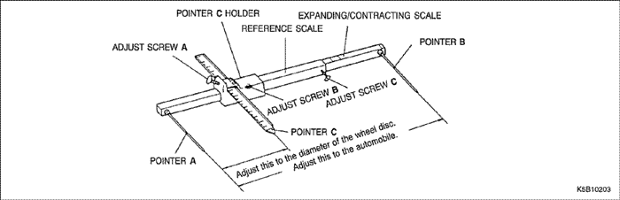
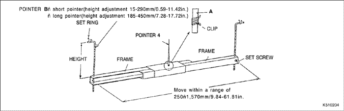
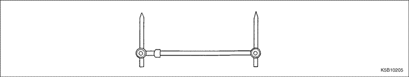

ПОДГОТОВКА КУЗОВА
ОБЩЕЕ ОПИСАНИЕ
- Большинство несущих кузовов изготавливаются в виде единого корпуса, который сваривается из формованных из металлического листа деталей различных форм и размеров. Каждая часть кузова должна обладать определенной прочностью и долговечностью, чтобы она могла исполнять свою роль в конструкции кузова в целом.
- Повреждение внешних частей кузова можно обнаружить визуально, однако место удара надо внимательно осмотреть, чтобы оценить степень повреждения. Иногда деформация может распространяться за пределы места удара, что требует особенно тщательного осмотра.
| CAPTIVA | Единица: мм (дюйм) |



Регулировка передних колес
| Развал | -0.55° ± 0.75° |
| Сход | 2.18° ± 0.73° |
| Схождение (в полностью заправленном и оборудованном состоянии) | 0.1° ± 0.08° |
Регулировка задних колес
| Развал | 0.35° ± 0.5° |
| Схождение (в полностью заправленном и оборудованном состоянии) | 0.09° ± 0.1° |
КОНТРОЛЬНЫЕ ТОЧКИ
- Тщательный осмотр поврежденных частей
РЕМНИ БЕЗОПАСНОСТИ
Обязательно заменяйте ремни безопасности, если:
- Лента ремня порезана, пробита, обожжена или повреждена как-либо иначе.
- Плохо работает замок или механизм втягивания ремня.
- К моменту аварии ремни были изношены (также проверьте на предмет повреждения точки крепления ремней безопасности).
- Состояние ремней безопасности вызывает сомнение.
Передняя часть:
- Есть ли изгибы, трещины, вмятины или иные повреждения подвески и связанных с ней частей?
- Есть ли деформации передней панели или траверсы радиатора? Разошлись ли какие-либо соединенные части?
- Есть ли вмятины или деформации передней колесной арки или боковой рамы? Разошлись ли какие-либо соединенные части?
- Есть ли изгибы или искривления всей передней части?
- Есть ли какие-либо деформации - вмятины, выпуклости, углубления - на передней стойке, щитке передка, на полу и т.п.?
- Есть ли вертикальные искривления или нарушения зазоров двери?
- Повреждено ли уплотнение ветрового стекла?
- Есть ли какие-либо деформации в окрестности верхней части средней стойки панели крыши?
- Есть ли повреждения внутри автомобиля (искривления щитка передка, отклонения зазоров или мест крепления листовых деталей?
- Есть ли повреждения рулевого колеса? Есть ли повреждения рулевой колонки и установленных на нее деталей?
- Есть ли утечки масла или воды, повреждения двигателя, трансмиссии или тормозов?
- Есть ли необычные шумы при переключении передач, при вращении двигателя или коробки передач?
- Есть ли следы касания между блоком цилиндров и центральной траверсой?
- Есть ли повреждения тормозных магистралей, топливопроводов или жгутов проводки?
Задняя часть:
- Есть ли изгибы, выпуклости или вмятины задней части пола или задних кронштейнов? Разошлись ли какие-либо соединенные части?
- Есть ли выпуклости или вмятины заднего крыла?
- Есть ли деформации задней внутренней панели? Есть ли изгибы или вмятины в окрестности задней стойки?
- Есть ли деформации или смятия задней колесной арки и секций дуг? Разошлись ли какие-либо соединенные части?
- Есть ли нарушения зазора уплотнителя заднего стекла?
- Есть ли деформации или нарушения зазора откидной секции крышки багажника?
- Есть ли изгибы, трещины, вмятины или иные повреждения подвески и связанных с ней частей?
- Есть ли деформации задней поперечины пола, панели пола багажника или панели задка? Разошлись ли какие-либо соединенные части?
Ударная балка:
Обязательно замените дверь в сборе, если:
- Под действием внешней силы деформирована ударная балка внутри двери.
- Обязательно заменяйте ударную балку, если:
- Под действием внешней силы деформирована ударная балка переднего или заднего бампера.
ВОССТАНОВЛЕНИЕ ПОВРЕЖДЕННОГО УЧАСТКА
- Присоедините к кузову правильный стенд.
- Боковую раму можно восстанавливать путем вытягивания.
- Закрепите автомобиль за горизонтальные швы контактной сварки.


СИСТЕМЫ ИЗМЕРЕНИЯ (БЕЗ НЕБОЛЬШИХ ПОВРЕЖДЕНИЙ)
- Всегда, когда возможно, суждения и заключения должны быть основаны на измерениях. Измерьте регулировку колес (см. стр. 2-2, 2-3) так, чтобы предотвратить будущие неполадки вроде несимметричного износа покрышек или заедания рулевого колеса.
- Если есть какие-либо отклонения, измерить части кузова с помощью следящего измерителя (см. рис. 4-1 внизу).
- Если есть изгиб кузова, провести измерение с помощью центровочного шаблона (см. рис. 4-2 внизу).
- При измерении габаритных размеров кузова использовать универсальный установочный шаблон (см. рис. 4-3 внизу).




